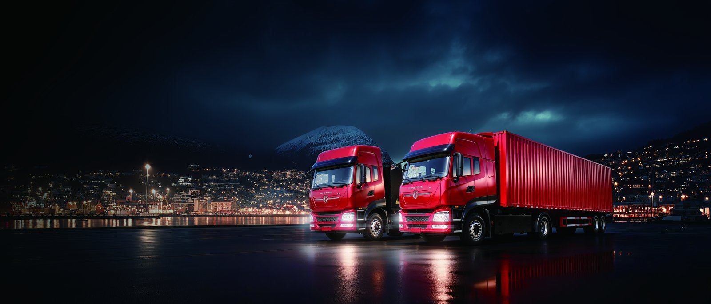

The KT5J electric cargo truck is an EV truck built for the garment export supply chain that links Chittagong port with Dhaka factories and inland container depots. With a 210 kWh CATL LFP battery and a 12 tonne gross vehicle weight rating, the KT5J moves loaded garment containers and carton boxes through the Dhaka corridor while cutting fuel cost and emissions on one of the busiest freight lanes in South Asia.
Bangladesh's ready made garment sector ships billions of dollars of product through Chittagong port, and the inland leg to Dhaka factories and consolidation warehouses is congested, slow and fuel hungry. Diesel trucks idle for hours in port queues and Dhaka traffic, burning costly fuel and adding exhaust to dense city air. The KT5J's electric drivetrain produces peak torque from zero rpm for loaded starts and draws no fuel while waiting, which is exactly where the Dhaka corridor punishes diesel the most.
The 12 t GVW class covers the majority of garment carton and bonded warehouse moves without a tractor trailer, and the 210 kWh pack is sized for the Chittagong to Dhaka round trip with a charging top up. For Bangladeshi exporters under pressure to cut scope 1 emissions in their supply chain reports, the KT5J is a practical, affordable step.
The KT5J is built on a 210 kWh CATL LFP battery, chosen for safety and long cycle life, with an 8 year or 4,500 cycle warranty covering the working life of the truck. The pack drives the chassis from a single energy source with no engine to maintain.
| Specification | KT5J Electric Cargo |
|---|---|
| Battery | CATL LFP 210 kWh |
| Gross vehicle weight | 12 tonnes |
| Battery warranty | 8 years / 4,500 cycles |
| DC fast charge | 20 percent to 80 percent in 45 to 90 minutes |
| Battery swap | 5 to 6 minutes where station available |
| FOB price range | USD 48,000 to 60,000 |
The Chittagong to Dhaka corridor spans about 250 km, within reach of the KT5J with a charging top up at a waypoint or on arrival at the factory depot. A 120 kW to 180 kW DC charger restores 20 percent to 80 percent in 45 to 90 minutes during the driver's break, and electricity at USD 0.05 to 0.18 per kWh makes a full charge cost roughly USD 11 to 38, against USD 55 to 95 of diesel for an equivalent cargo shift.
For fleets near the Bangladesh electric truck market hubs in Dhaka and Chittagong, battery swap is an option where a swap station is available, turning a charge stop into a 5 to 6 minute swap that keeps the export schedule tight.
The FOB price of USD 48,000 to 60,000 is close to a diesel cargo truck once operating savings are counted. Bangladesh diesel is around USD 0.9 to 1.4 per litre equivalent, and a corridor truck idles heavily in traffic, so the energy gap is wide.
| Cost factor | Diesel cargo | KT5J electric |
|---|---|---|
| Energy per shift | USD 55 to 95 diesel | USD 11 to 38 electricity |
| Scheduled maintenance | High, engine and cooling | Low, no engine oil |
| Idling cost | High in traffic | Zero, no burn |
| 5 year energy saving | Baseline | USD 40,000 to 80,000 |
A garment exporter running four to six KT5J units on the corridor typically recovers the purchase premium within two to three years on energy and maintenance savings, while improving the carbon story presented to international buyers.
Bangladeshi buyers should budget for import duty, customs clearance and local registration on top of FOB price, plus a depot charger and any electrical upgrade at the factory. Shaanxi Fenghan Trading Co., Ltd, the authorized Dongfeng EV exporter in Xi'an, prepares full shipping and customs documents and can advise on the current duty classification for electric commercial vehicles, which often carries a lower rate than diesel to encourage clean transport.
Start with two KT5J units on the highest frequency factory lane, measure kWh per kilometre against diesel spend, then scale across the export fleet. Operator training on regenerative braking and charge timing extends battery life toward the full 4,500 cycles, and a Dhaka depot charger anchors the rotation.
Shaanxi Fenghan Trading Co., Ltd, the authorized Dongfeng EV exporter based in Xi'an, China, supports every KT5J export with a documented spare parts list, recommended consumables and a regional service plan so fleet uptime stays high on the corridor. Key wear items such as brakes, tires, lights and the high voltage connectors are specified for local procurement where possible, while battery and motor specific components are shipped from stock with clear lead times. Operator and mechanic training covers safe high voltage isolation, charge management and the overload checks suited to Dhaka's congested freight lanes.
Remote diagnostics and a shared parts manual let local workshops resolve most issues without a factory visit, and the 8 year or 4,500 cycle battery warranty gives finance teams a predictable cost baseline. For Chittagong exporters running the KT5J on garment runs, this support structure keeps the truck earning through peak season instead of sitting idle waiting on parts.
Most overseas buyers purchase on FOB terms and arrange their own ocean or ro-ro shipping to Chittagong, so the practical planning unit is the total landed cost rather than the sticker price alone. Typical lead time from confirmed order to Chinese port is 30 to 60 days depending on battery configuration and charger option, and a phased rollout of two to four units lets an exporter validate kWh per kilometre before committing to a full fleet conversion. Shaanxi Fenghan Trading can quote a package that includes the truck, a factory depot charger specification and the spare parts kit so the buyer receives a ready to operate solution.
For exporters comparing the KT5J against continued diesel use, the deciding metric is lifetime cost per carton moved, and the electric truck's lower energy and maintenance line items compound across a multi year export contract. Requesting a written quote with battery size, GVW configuration and delivery terms is the first concrete step toward electrifying a garment export fleet with confidence and a clear payback model.
International garment buyers are increasingly asking suppliers about scope 1 emissions in their logistics, and an electric cargo truck is one of the fastest ways to cut exhaust on the Chittagong to Dhaka lane. Early movers can also lock in lower per kilometre energy cost now and build the charging routine before competitors catch up. The KT5J's 210 kWh CATL LFP pack and 8 year warranty remove the two biggest fears about electric trucks, range and battery life, leaving only the step of installing a factory depot charger rated for the corridor.
Taken together, the case for the KT5J in Bangladesh is about sequencing: order early, train crews, build the charging routine, and scale as the savings and supply chain benefits compound. Shaanxi Fenghan Trading stands ready to support Bangladeshi buyers from first quote through the first year of operation and beyond as the fleet grows.
Buyers exploring the Bangladesh electric truck market should request a written FOB quote covering battery size, GVW configuration and charger option. The KT5J electric cargo truck is exported from China with documentation for Bangladeshi import and road registration. Contact Shaanxi Fenghan Trading for lead times, shipping to Chittagong and a total landed cost estimate for your garment export logistics.
Ready to electrify your fleet? Contact Shaanxi Fenghan Trading — authorized Dongfeng EV truck exporter. WhatsApp: +86 153 1943 1311 | Email: sales@fenghan-trade.com | dongfengevtrucks.com
🌐 Our Network: Fenghan Trade (SAGMOTO/SHACMAN Truck Export) · SAGMOTO cargo truck flatbed box stake